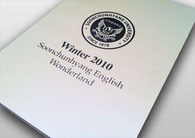
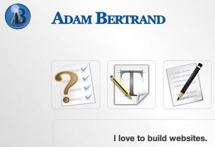

Adam's Bio
After graduating from South Dakota State University with a BA in graphic design, Adam Bertrand co-founded Bertrand Design with his older brother Benjamin Bertrand. He functioned as the lead designer for much of that year. At the end of 2005 Adam sold his half of the partnership to Ben and moved to South Korea for adventure and travel.
He continued to design for international clients until returning to the States in early 2011. He now resides in Connecticut with his wife and two sons.
Visit his personal portfolio site at www.adam-bertrand.com
SCH Asian Studies Website
Soonchunhyang University in Asan, South Korea is a leader in English education in Korea. Adam designed and developed a large Wordpress CMS based site for their Asian Studies study abroad program. The program hosts over 50 English speaking students every semester.
{kind=link}
SCH New Teacher's Handbook
Adam initiated the development of the first comprehensive orientation manual for new foreign faculty working at SCH. He took it upon himself to design and write the new teacher's handbook in 2008. He was asked to keep updating it each semester after that until the second semester in 2010.
{kind=link}
{kind=link}
{kind=link}
SCH Camp Memory Book
Soonchunhyang University hosts a bi-annual English camp for elementary and middle school students every summer and winter. In the winter of 2010, Adam designed and wrote a camp memory book that not only lets campers relive their fond memories, but also highlights all the great academic classes and fun activities for their parents to see.
SCH Writing Center Banner
Dedicated English Professors at Soonchunhyang University established an English Writing Center in 2010 in order to help students better their writing skills. Adam was hired to design a banner for their grand opening.
{kind=link}
Full Portfolio
To see more of his personal portfolio, please visit www.adam-bertrand.com.